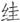

八
如将不入城市、逃释、不仕、避居海外诸多情形加在一块，明清鼎革之际，中国人才流失将达非常严重的程度。这不可能不表示文化的零落。满清一度为此窘迫，到处寻访“贤逸”，征召、拜求，却每每碰钉子，吃闭门羹。《桃花扇》剧终前，有位捕快登场：
三位不知么，现在礼部上本，搜寻山林隐逸。抚按大老爷张挂告示，布政司行文已经月余，并不见一人报名。府县着忙，差俺门各处访拿，三位一定是了，快快跟我回话去。[58]
这当为真实写照。人才匮乏，当局竟至强行“拿人”，可见知识分子怎样普遍地不合作。
为解决问题，当局软硬兼施，无所不用其极。
软的一手，即以科举相诱。这一点，与蒙元不同，或者说吸取了蒙元的教训。孟森先生指出：“明一代迷信八股，迷信科举，至亡国时为极盛，余毒所蕴，假清代而尽洩之。盖满人旁观极清，笼络中国之秀民，莫妙于中其所迷信。始入关则连岁开科，以慰蹭蹬者之心”。[59]任何时候，总有利欲之徒，清初自不例外。《柳南续笔》录有一首讽刺诗，即反映这类情形：
一队夷、齐下首阳，几年观望好凄凉。早知薇蕨终难饱，悔杀无端谏武王。[60]
夷、齐即伯夷和叔齐，他们“耻食周粟”，隐首阳山。诗中借这典故，嘲笑在科举诱惑下轻弃初衷的“遗民”。对这些渴求功名的人，当局此手颇能奏效，以致后来还闹出丁酉（顺治十四年，1657）南北二闱的大丑闻。
矢志不渝者也并不少。对他们，软的不行，则“继而严刑峻法”，“以刀锯斧钺随其后”。[61]这方面的情形，尤见于东南一带。盖因彼处既为明兴之地，同时，立于乡绅—民间互动基础上的社会再组织情形，或者说以士夫为中心的新型领导权，发育最充分。为此，满清在那里重拳频出，屡次制造大案、惨案，以期摧毁当地的知识分子集团。其荦荦大者，是“奏销”“哭庙”两案。
“奏销”一案，发生于辛丑年（1661），标志是正月二十九日康熙皇帝的一道谕令。所谓“奏销”，是国家财政工作的一个内容，即每年征收钱粮，据实报部奏闻。康熙这道后称“奏销令”的旨意这样说：
谕吏部户都：钱粮系军国急需，经管大小各官，须加意督催，按期完解乃为称职。近览章奏，见直隶各省钱粮拖欠甚多，完解甚少，或系前官积逋贻累后官，或系官役侵那借口民欠……[62]
孟森先生说，从表面看，该谕“固亦整顿赋税一事，非不冠冕”[63]；但内涵哪里是表面那么简单而堂皇，否则，有清一代不至于讳莫如深，“二百余年，人人能言有此案，而无人能详举其事者，以张石州（清中期大学者张穆）之博雅，所撰《亭林年谱》中，不能定奏销案在何年，可见清世于此案之因讳而久湮之矣。”[64]《东华录》内仅存上述上谕，“官书所见止此”，其他记录一概抹掉。而“私家纪载自亦不敢干犯时忌，致涉怨谤。今所尚可考见者，则多传状碑志中旁见侧出之文”[65]。这就难怪张穆距此事不过百年，却连它发生年月都已不能确定。
“拖欠甚多，完解甚少”是不是事实？的确是事实。不过在它前头，却先有别的事实。董含《三冈识略》：
江南赋役，百倍他省，而苏、松尤重。迩来役外之征，有兑役、里役、该年、催办、捆头等名；杂派有钻夫、水夫、牛税、马荳、马车、大树、钉、麻、油、铁、箭竹、铅弹、火药、造仓等项；又有黄册、人丁、三捆、军田、壮丁、逃兵等册。大约旧赋未清，新饷已近，积逋常数十万。[66]
换言之，江南拖欠钱粮不假，然而不得不拖、不得不欠，因为负担太重，根本无法完成。负担这么重，有三个原因。两种可以摆到桌面上，一种则只可意会、不可言传：第一，开国之初，多处用兵，南方和西部皆待大定，也即康熙上谕头一句所说：“钱粮系军国急需”。第二，江南为天下财赋所出，他省经济生产远为不如，故为朝廷所特别倚重，这倒不独清朝为然，在明代也如此。最后一条，不能拿到桌面上来，但天知地知你知我知——东南乃前朝势力最顽固地区，在满清而言，加重负担乃有意为之，严苛其政以收打压、降服之效，在当地绅民而言，一方面不堪重负，一方面也确实不肯逆来顺受，有反抗情绪。总之，事情表现于赋税，实质还是政治。
对撼和冲突所以在辛丑年表面化，有其特殊原因，此即这一年，顺治朝结束而康熙朝开始。顺治皇帝虽为满清入中国后首任君主，却非所谓身怀“雄才大略”的一位，在位十八年，统治不曾达于“铁腕”程度。这也就是“遗民”处境何以一度还算宽余，不至于岌岌可危。比如刚才写到的钱谦益，反清情绪、态度乃至行为，都不甚隐晦，但状况大致平稳，有了麻烦经过疏通亦可化解（金鹤冲《年谱》所谓“多难，或以货免”）。黄宗羲是更明显的例子，他直接投身武装抗清直至顺治十年，其间虽遭满清三次通缉，但中止行动后也就不了了之，回乡从事著述至终。
辛丑正月，顺治刚刚驾崩，整个态势当即急转。继任者玄烨以八岁之龄，却显出了他父亲始终所不具备的“雄才大略”——继位仅二十天，就下达导致奏销案的新令，这是他六十一年统治生涯诸多重大决定中的第一个。从这时起，清朝将连续迎来三位“雄才大略”君主。康熙、雍正、乾隆，一个比一个铁腕。经过康、雍、乾三朝，遗民现象土崩瓦解，满清真正实现了精神思想方面的铁屋建设。
具体情节方面，还有一位煽风点火之人，他便是时任江南巡抚的朱国治。为逢迎旨意，朱国治编制了一份拖欠人员的庞大名录，其中多有虚报不实内容，“造欠册达部，悉列江南绅衿一万三千余人，号曰‘抗粮’。”[67]康熙大怒，令“十年并征”，要将十年来拖欠的一并征缴。试想，赋税之重，一年完额都难做到，十年并征如何可能？然而，朝廷用心也许本就不在可能与不可能，而在于借题发挥、借机发难。孟森指出“以积年蒂欠取盈于一朝，本非正体”：
但朝廷当日实亦有意荼毒缙绅，专与士大夫为难。[68]
或许，这便是明知所令蛮不讲理、几无可行性，却断然行之的内幕。
这点醉翁之意，借若干离奇之例，窥之益明：
辛丑奏销一案，昆山叶公方霭以欠折银一厘左官，公具疏有云：“所欠一厘，准今制钱一文也。”时有“探花不值一文钱”之谣。公盖为己亥（顺治十六年，1659）进士及第第三人云。[69]
过错如此之轻，而惩处如此之重，全不成比例。由此可知，“拖欠”之名，即便有一定实指性，却相当程度上是虚晃一枪。借奏销为由，制服江南并狠煞士夫风气，才是满清的“百年大计”。我们曾讲过，中晚明时代，传统君权独大局面，日益被新崛起的士夫（知识分子）领导权分其秋色乃至削弱，这种势头，不惟见于朝堂，亦见于社区基层之日常生活，而在文教最发达的东南一带尤为显著。此趋势对于中国所固有的传统君权已大为不利，对于以异族而入主中国的满清则更为不利。
随奏销案而后续出现的严重辱躏士绅现象，大大超出了追收钱粮的范围与需要，而更清楚地显现当局的真实意图。时人于私人通信中，描述亲眼所见的惨状：
江南奏销案起，绅士黜籍者万余人，被逮者亦三千人。昨见吴门诸君子被逮过毗陵，皆锒铛手梏拳，徒步赤日黄尘中，念之令人惊悸，此曹不疲死亦道渴死耳。旋闻奉有免解来京指挥，洒然如镬汤炽火中一尺甘露雨也。[70]
“令人惊悸”是关键，当局想要的大抵在此。而当时汉族知识界对于奏销案的深刻用意，其实了然于心、洞如观火。《景船斋杂记》载，福建考生崔殿生“素志欲谒孔林”，他趁去北京“入对”之便，造访曲阜孔府：
圣裔（孔府继承人）密语殿生云：“暮秋八月，陵（孔氏陵墓，即孔林）中哭声动天地，百里尽闻，三昼夜而止，其吾道将衰乎？”比顺治辛丑八月，遂起奏销之祸，罪及孔氏，殆先征耶？[71]
故事未必果有，虚构可能性大；然而，不在事真，而在叙事中透出的“舆情”——亦即士林普遍认为，奏销案明里整顿赋税，实质则是整治知识分子。
与奏销案相穿插，又有哭庙一案。哭庙与奏销，有关联、有区别。关联为俱因钱粮而起，幕后黑手都是朱国治。区别是：一、哭庙案仅限苏州一地；二、士绅首先发难；三、死了人。
话说顺治十七年底，苏州府吴县来了一位新任长官，名叫任维初。初来乍到，就很强势，威风八面。说：“功令森严，钱粮最急，考成攸关。国课不完备者，可日比，不必以三、六、九为期也。”打破常规，天天追讨，不惜大棍伺候。皂隶若打得轻些，会遭责骂。被打者如因疼痛出声，“则大怒，必令隶扼其首，使无声”。每个受责者，鲜血淋漓，难于立起。不久，有一人竟然当场杖毙堂下。
姓任的如此狠刻，倘若尽其公职也还罢了，然自古以来，并无不贪之官吏却如狼似虎者。任维初疯狂追讨，原是借机牟利，他将追讨来的米粮克扣一部分，交付总兵吴行之卖掉，“计其所得三千余石”。“三百年来未有如维初之典守自盗者也”。消息走漏，“诸生倪用宾等，遂有哭庙之举”。
“哭庙”之“哭”，指顺治皇帝死讯到来后，地方举行的悼念活动；“庙”，即文庙、孔庙。所谓“哭庙案”，便是苏州知识界在悼念顺治皇帝的集会中发生的案件。
顺治十八年二月初四，部分士子从有关方面讨得文庙钥匙，举行悼念活动，“诸生踵至者百有余人”。人一多，自然聚在一起议论任维初的贪黩，群情汹然。有人似乎有备而来，拿出一张揭帖（请愿书），大家都赞同附和。于是“鸣钟伐鼓，旋至府堂”，从文庙转往官衙。当时，抚臣朱国治、道臣王纪与府县各官，刚好都在苏州。消息传出，又有上千诸生赶到，“号泣而来，欲逐任令”。朱国治“大骇”，当即下令逮捕请愿者。“众见上官怒，遂尔星散”，只抓到十一人。道臣王纪不明就里，想秉公而断，居然当真将任维初、吴行之抓来拷问，得供：“犯官到县止二月，无从得银，而抚台索馈甚急，不得已而粜粮耳。”抚台，即朱国治——原来，真正的硕鼠在这儿。
既然搞到了朱国治的头上，后果可想而知。长话短说，朱国治从王纪那偷走口供，而以伪造的掉包。同时迅速打报告给朝廷，将事件定为抗粮和惊扰先帝亡灵：
总之，吴县钱粮历年逋欠，沿成旧例，稍加严比，便肆毒螯。若不显示大法，窃恐诸邑效尤，有司丧气。
一句话，这是反政府；纵容之，“邪气”上升、“正气”受挫。京师闻报，正中下怀，立遣四位满大人，“公同确议，拟罪具奏”。
案子理应于苏州处置，却临时改在江宁（南京）异地审理，“盖抚臣恐民心有变，故在江宁会审。”四月初四日起解，“任维初乘马，从而去者，披甲数骑”，与十一位诸生待遇对照鲜明：
十一人各械系，每人有公差二人为解头，披甲数十骑拥之。父兄子弟往送者，止从旁睨，不能通一语。稍近，则披甲鞭子乱打，十一人行稍缓亦如之。父兄子弟见者，惟有饮泣而已。三日，到江宁，即发满洲城。任维初至则召保，日与衙役三四辈饮于市。
会审时，十一诸生起初仍以任维初贪污情节对，四位满大人斥道：“我方问谋反，尔乃以粜粮为辞耶！每人一夹棍，三十板。”朝廷只想挖掘“反动分子”，对贪官没兴趣。案子走向，开始即如此。之后，复逮七人到案，其中有才子金圣叹。四月底定谳，称：
秀才倪用宾，平日不告知县任维初，乃于初二日遗诏方临，辄行纠众聚党，在举哀公所要打知县，跪递匿名揭帖。鸣钟伐鼓，招呼数千人，摇动人心，聚众倡乱，大干法纪。
所有十八人“不分首从，立决处斩”。至于任维初，“既无过犯，相应免议。”
任维初五月一日回县复任，一到衙，即声言：“我今复任，诸事不理，惟催钱粮耳。”五月二十日，朱国治也到苏州，籍没所有案犯之家，“各家细软财物，劫掠一空。夫人及眷等，皆就狱。”“城中讹言大起，有言尽洗一乡者，有言屠及一城者。人心惶惶，比户皆恐。”民间有两种议论，一种是怨怪：“众秀才何苦作此事！”另一种认为：“都堂欲如此耳，何与众秀才事！”不乏因害怕而“远避他乡”者。[72]
案犯引颈受戮，时在七月十二日，场面甚血腥。当日一同处死者，有十案一百二十人。《丹午笔记》：
是日也，十案共有一百二十人，凌迟廿八人，斩八十九人，绞四人，分五处行刑。抗粮及无为教案，斩于三山街，四面皆披甲围之，抚（朱国治）监斩。辰刻于狱中取出，罪人反接，背插招旗，口中塞栗木，挟而趋走如飞。亲人观者稍近，则披甲枪柄、刀背乱打。俄而炮声一震，百二十人之头皆落，披甲奔驰，群官骇散，法场土上惟有血腥触鼻，身首异处而已。[73]
时人暗于诗中论之：“巧将漕粟售金银，枉法坑儒十八人。”“中丞杀士有余嗔，罗织犹能毒缙绅。”[74]可见当时舆论已知该案意在“坑儒”、“杀士”，经济案其表而文字狱其里。当代却有学者说：“一般士子家庭被追扑实与其缺乏基本的赋役知识有关”[75]，不解满清深意也如此。